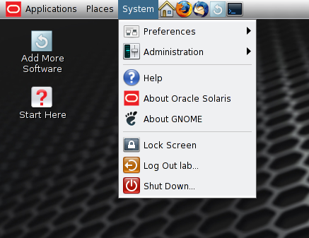
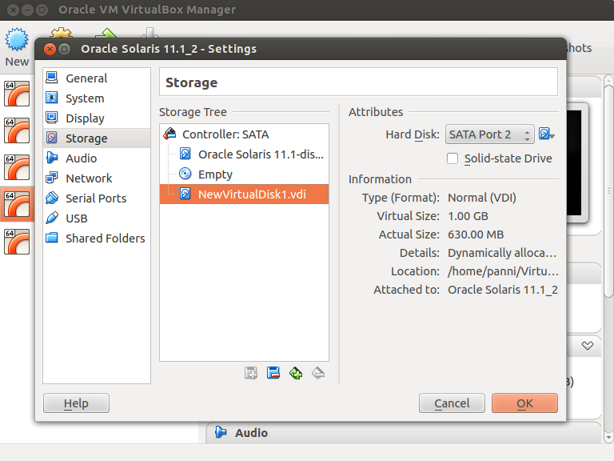
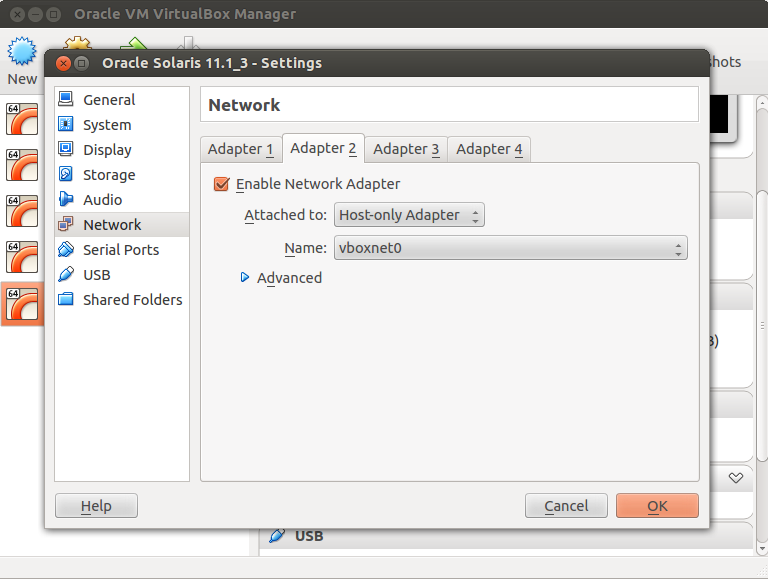
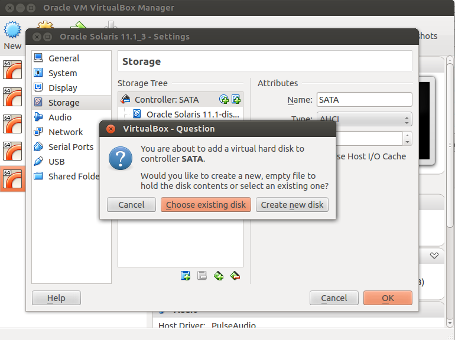

On our previous Virtual Sysadmin Sessions we have learned how to configure and install zones in Oracle Solaris 11. We have also learned a simple way to produce copies of your application or development environment by cloning zones. You can easily install all the necessary packages and services in one zone and then clone it as many times as you need. All the packages will be installed and all the services will be up and running after the first boot. It's all good, but still we had to create our first zone manually. In this lab we will show how to automate this process and install a fully configured and customized zone from scratch using simple configuration files.
In this example we are going to create a zone which is ready for use as a general purpose web server. It will have all components of an AMP (Apache, MySQL, PHP) environment and two network interfaces: one for external communications and another for internal connection (to a separate database server, for example). It will look very similar to the one we have created in our lab called "Cloud in a Box" during Virtual Sysadmin Day last year.
First, we have to create a ZFS file system to store our zone. You know how to do this, don't you? And, just to remind you, you have to become root ('su -') before doing all the exercises below.
root@solaris:~# zfs create -o mountpoint=/zones rpool/zones
Also we will need a VNIC for the zone's internal connection. Let's create it and name it 'amp0'.
root@solaris:~# dladm create-vnic -l net0 amp0
During the VirtualBox preparation stage we have created an additional network interface. We are going to use it in our zone for external communications. In order to do that we have to remove its IP stack in the global zone. It will be still configured as a datalink.
root@solaris:~# ipadm delete-ip net1
Now we have to prepare three configuration files. The first one will be used to configure the zone with 'zonecfg' command. The second one will be used to install the zone, install all packages we need in the zone. The third file will configure the zone's internal parameters like hostname, time zone etc. The name of the zone will be 'amp' (as in Apache, MySQL, PHP) so we will call the files amp-config.txt, amp-manifest.xml and amp-profile.xml respectively.
This file is a plain text file which can be created using your favorite text editor (some prefer 'vi', some 'gedit', both are available in the default Oracle Solaris 11 VM installation). Your zone configuration file should look like this:
root@solaris:~# cat amp-config.txt create -b set brand=solaris set zonepath=/zones/amp set autoboot=false set ip-type=exclusive add net set physical=amp0 set allowed-address=10.0.2.21/24 end add net set physical=net1 set allowed-address=192.168.56.20/24 set defrouter=192.168.56.1 end add capped-cpu set ncpus=0.5 end
In this file we have configured two network interfaces with fixed IP addresses, the path where the zone will store its files and the zone's resource management cpu controls, the number of cpus allocated to the zone.
In the manifest file we use Automated Installer's format and describe packages we are going to install inside the zone. The easiest way to create it is to copy the existing template and then edit it.
root@solaris:~# cp /usr/share/auto_install/manifest/zone_default.xml ~/amp-manifest.xml root@solaris:~# chmod u+w amp-manifest.xml root@solaris:~# vi amp-manifest.xml (or use gedit, if you prefer)
Edit the manifest file: find the line with '
<name>pkg:/group/feature/amp</name>
As you can see, by default zones are installed with only minimal group of packages, which is called solaris-small-server (about 185 packages). We have added another group of packages that contains Apache, MySQL, PHP and all their dependencies. In a similar manner you can add any package or group of packages -- just use its package name from 'pkg list' command output with 'pkg:/' added to the front. Just for practice purposes, try to add another package to the zone, like text-based browser 'links' which might be helpful inside the zone.
We use this file to avoid first time boot configuration process. We want our zone to be up and running and ready to serve web requests right after the first boot, so we will use this profile file during the installation process. We will use 'sysconfig' utility to create the profile file which is called 'amp-profile.xml'. Enter the command:
root@solaris:~# sysconfig create-profile -o amp-profile.xml
On the following screens configure the following (move from one screen to another using [F2]):
ampNone (we have already configured network interfaces in amp-config.txt)After you have finished this dialog, check if you have created a file called amp-profile.xml in your current directory. We have to edit it a little bit.
root@solaris:~# ls -l amp-profile.xml root@solaris:~# chmod u+w amp-profile.xml root@solaris:~# vi amp-profile.xml
Go to the very end of this file and just before the final line with </service_bundle> insert the following three lines:
<service version="1" type="service" name="network/http"> <instance enabled="true" name="apache22" /> </service>
This will enable Apache web service and our zone will be ready for use after the first boot.
Now everything is prepared for the actual zone installation. There will be just two commands for that: the first one configures the zone, and the second installs it using the manifest and profile we've just created.
root@solaris:~# zonecfg -z amp -f amp-config.txt root@solaris:~# zoneadm -z amp install -m ~/amp-manifest.xml -c ~/amp-profile.xml
Now you have to wait for several minutes until the zone is completely installed. After the installation is completed, boot the zone and login into it to check if everything is OK. It may take a while (about a minute or so) until all services in the zone have started and you get a login prompt.
root@solaris:~# zoneadm -z amp boot root@solaris:~# zlogin -C amp [Connected to zone 'amp' console] amp console login: lab Password: oracle1 Oracle Corporation SunOS 5.11 11.1 September 2012 lab@amp:~$ ipadm NAME CLASS/TYPE STATE UNDER ADDR amp0 ip ok -- -- amp0/v4 from-gz ok -- 10.0.2.21/24 lo0 loopback ok -- -- lo0/v4 static ok -- 127.0.0.1/8 lo0/v6 static ok -- ::1/128 net1 ip ok -- -- net1/v4 from-gz ok -- 192.168.56.20/24 lab@amp:~$ svcs apache22 STATE STIME FMRI online 14:51:03 svc:/network/http:apache22 lab@amp:~$
Perfect! Both interfaces are configured, with internal and external addresses. External address (192.168.56.20) should be available from our host machine (as we have configured it in VirtualBox as Host-only network). Try opening this address in your host machine's browser and you should see "It works!" from your zone's Apache web server. Just to make sure you are talking to your zone, try to login into it, become root and change /var/apache2/2.2/htdocs/index.html to something more meaningful.
Now we have installed our zone successfully and it's now up and running. Now you want to make sure that this zone will not take over your system resources and will behave well with other tenants (i.e. zones). We have already made our first step toward that: remember the 'ncpus' parameter we have set in the configuration file? We have limited the zone's utilization of CPUs by only one half of a CPU. Let's check if the zone follows our orders. Open two terminal windows, become root in both of them. In the first window start a 'zonestat' command:
root@solaris:~# zonestat 5 (5 is the interval in seconds, like in all other *stat commands)
You can see now how this command is printing out CPU utilization, memory utilization, even network bandwidth utilization. Our amp zone is not particularly busy right now. Let's put some load on it. In another terminal window (remember, you have to be root!) enter the following command (it just generates a lot of system calls to keep CPU busy):
root@solaris:~# zlogin amp 'while true ; do date > /dev/null ; done'
Check your first window, where zonestat is running. You should be able to see something like this:
Interval: 3, Duration: 0:00:15
SUMMARY Cpus/Online: 1/1 PhysMem: 1535M VirtMem: 2559M
---CPU---- --PhysMem-- --VirtMem-- --PhysNet--
ZONE USED %PART USED %USED USED %USED PBYTE %PUSE
[total] 0.60 60.8% 1097M 71.4% 1633M 63.8% 0 0.00%
[system] 0.07 7.25% 523M 34.0% 946M 36.9% - -
amp 0.49 49.7% 100M 6.56% 188M 7.35% 0 0.00%
global 0.03 3.83% 473M 30.8% 498M 19.4% 0 0.00%
Interval: 4, Duration: 0:00:20
SUMMARY Cpus/Online: 1/1 PhysMem: 1535M VirtMem: 2559M
---CPU---- --PhysMem-- --VirtMem-- --PhysNet--
ZONE USED %PART USED %USED USED %USED PBYTE %PUSE
[total] 0.60 60.9% 1097M 71.4% 1633M 63.8% 0 0.00%
[system] 0.07 7.43% 523M 34.0% 946M 36.9% - -
amp 0.49 49.7% 100M 6.57% 187M 7.34% 0 0.00%
global 0.03 3.74% 473M 30.8% 498M 19.4% 0 0.00%
You see? Our amp zone behaves really well, strictly following the rules we have established and not overusing its CPU limit by a tenth of per cent!
OK, but how can we tell what limit was set for the zone and what percentage of that limit the zone is using? It should be good to know for planning purposes. Run zonestat with the following parameter and watch the output:
root@solaris:~# zonestat -r default-pset 5
Collecting data for first interval...
Interval: 1, Duration: 0:00:05
PROCESSOR_SET TYPE ONLINE/CPUS MIN/MAX
pset_default default-pset 1/1 1/1
ZONE USED %USED CAP %CAP SHRS %SHR %SHRU
[total] 0.60 60.8% - - - - -
[system] 0.07 7.16% - - - - -
amp 0.49 49.8% 0.50 99.6% - - -
global 0.03 3.82% - - - - -
Interval: 2, Duration: 0:00:10
PROCESSOR_SET TYPE ONLINE/CPUS MIN/MAX
pset_default default-pset 1/1 1/1
ZONE USED %USED CAP %CAP SHRS %SHR %SHRU
[total] 0.60 60.7% - - - - -
[system] 0.06 6.98% - - - - -
amp 0.49 49.8% 0.50 99.7% - - -
global 0.03 3.85% - - - - -
This output clearly shows that CPU cap was set to 0.5 for amp zone (column CAP) and it is used by almost 100%. Clearly the zone is too busy and needs more resources.
We can manage zone's resources on the fly, without stopping the zone. Use the following command to increase CPU resource assignment to 0.7:
root@solaris:~# prctl -n zone.cpu-cap -r -v 70 -i zone amp
Check the result with zonestat -r default-pset 5 as in the example above. Of course, on real systems, especially on SPARC T-series boxes, there are much more CPUs you can assign to a zone. For instance, to assign 8 virtual CPUs (i.e. hardware threads) you will use 800 instead of 70 in the prctl commmand. You may also experiment even with your VirtualBox VM if you increase the number of CPUs in the virtual machine using VirtualBox Manager. You can check how many CPUs are available in the system by using the following commands:
root@solaris:~# psrinfo 0 on-line since 12/24/2013 04:34:18 You have new mail in /var/mail/root root@solaris:~# psrinfo -v Status of virtual processor 0 as of: 12/24/2013 09:48:14 on-line since 12/24/2013 04:34:18. The i386 processor operates at 2586 MHz, and has an i387 compatible floating point processor. root@solaris:~# psrinfo -pv The physical processor has 1 virtual processor (0) x86 (GenuineIntel 306A9 family 6 model 58 step 9 clock 2586 MHz) Intel(r) Core(tm) i5-3320M CPU @ 2.60GHz
As you can see, you can get even more information about processors than you needed.
Imagine that you have checked zone's utilization level (using the commands above) and realized that you have to add more CPUs to that zone. But apparently you don't have enough CPUs on this particular server. The only way to increase the zone's performance is to move it to another server that has more CPUs available. Let's learn how to do that. There are several ways of migrating zones; we will describe here just one of them. We will give you links to other ways at the end of this exercise.
In our example we are going to use ZFS send/receive command to migrate the zone's data (you can learn more about it in our Data Management section of this Hands-on Lab). We will use an external virtual drive attached to our VirtualBox VM to model an external disk array. First, we have to create it. Shutdown your Solaris OS and open VirtualBox Manager. Add a 1GB external drive to the VM using the following snapshots as a guide.
Now start the VM again, log in, open a terminal window, become root and create a new ZFS pool. (You can find a more detailed explanation of the commands below in our Data Management section).
root@solaris:~# echo | format (this command prevents format from going into interactive mode)
Searching for disks...done
AVAILABLE DISK SELECTIONS:
0. c7t0d0
/pci@0,0/pci8086,2829@d/disk@0,0
1. c8t0d0
/pci@0,0/pci1000,8000@16/sd@0,0
Specify disk (enter its number): Specify disk (enter its number):
root@solaris:~# zpool create labpool c8t0d0
Create a new ZFS file system to store your zone's data.
root@solaris:~# zfs create labpool/zones
Now shutdown the zone, detach it (to prevent it from booting on this host), and export its configuration to a file.
root@solaris:~# zoneadm -z amp shutdown root@solaris:~# zoneadm -z amp detach root@solaris:~# zonecfg -z amp export > /labpool/zones/amp-config.txt
Now create a snapshop of the zone's file system and migrate it to the external pool.
root@solaris:~# zfs snap -r rpool/zones/amp@snap1 root@solaris:~# zfs send -r rpool/zones/amp@snap1 | zfs recv labpool/zones/amp
Now after we have copied all we needed to the external drive, we can export the pool to prepare it for migration to another host.
root@solaris:~# zpool export labpool
Next step should be powering off your server and physically detaching the drive. Our VirtualBox equivalent will be shutdown Solaris from the desktop menu (System->Shut Down) and removing the virtual disk from the virtual machine.
 Now it's time to decide what is going to be our target machine. The best way is to re-import the Oracle Solaris appliance (that huge file you have downloaded while preparing for this lab) and configure the new virtual machine similarly to the source machine. So, import the appliance (most likely it will get the name "Oracle Solaris 11.1_1" or something like this) and before starting it, make a couple of changes. First, add an extra network interface (remember, our zone needs it for external communications) and then add the virtual disk from our source VM.
Make sure the interface is configured "Host-only".
On this step you should find the virtual disk you have created for the source machine. Go one level up and then enter your source VM's directory (most likely it is named "Oracle Solaris 11.1"). Choose the .vdi file you have created when configuring the VM. Most likely it is named "NewVirtualDisk1.vdi".
Now the target virtual machine is configured you can start it. If you just have imported the appliance downloaded from oracle.com, you have to perform the same configuration steps described in the "VM preparation" step (hostname, root password, normal user, time zone etc.). Then login and open the Terminal application. Become root (su -) and prepare your new system to run our amp zone: it should have a VNIC called amp0 and also a datalink interface net1, but not an IP interface.
root@solaris:~# ipadm delete-ip net1 root@solaris:~# dladm create-vnic amp0
The rest is easy. Import the ZFS pool which is located on the virtual disk we have attached to the VM.
root@solaris:~# zpool import
pool: labpool
id: 9911583814859309846
state: ONLINE
action: The pool can be imported using its name or numeric identifier.
config:
labpool ONLINE
c7t2d0 ONLINE
root@solaris:~# zpool import labpool
We have to import the zone configuration from the file we have created with 'zonecfg export' operation. But before that we will edit the file to point to the new location of the zone root file system.
root@solaris:~# vi /labpool/zones/amp-config.txt Change 'set zonepath=/zones/amp' to 'set zonepath=/labpool/zones/amp' and save the file. root@solaris:~# zonecfg -z amp -f /labpool/zones/amp-config.txt zonecfg -z amp -f /labpool/zones/amp-config.txt root@solaris:~# zoneadm list -cv ID NAME STATUS PATH BRAND IP 0 global running / solaris shared - amp configured /labpool/zones/amp solaris excl
And now attach the zone (it already knows where its data is):
root@solaris:~# zoneadm -z amp attach
Progress being logged to /var/log/zones/zoneadm.20131226T193054Z.amp.attach
Installing: Using existing zone boot environment
Zone BE root dataset: labpool/zones/amp/rpool/ROOT/solaris
Cache: Using /var/pkg/publisher.
Updating non-global zone: Linking to image /.
Processing linked: 1/1 done
Updating non-global zone: Auditing packages.
No updates necessary for this image.
Updating non-global zone: Zone updated.
Result: Attach Succeeded.
Log saved in non-global zone as /labpool/zones/amp/root/var/log/zones/zoneadm.20131226T193054Z.amp.attach
root@solaris:~# zoneadm list -cv
ID NAME STATUS PATH BRAND IP
0 global running / solaris shared
- amp installed /labpool/zones/amp solaris excl v
Now start the zone, wait until it boots and check if the web server is up and running. On your host machine in the browser address line enter: '192.168.56.20' and enjoy this simple message: "It works!".
root@solaris:~# zoneadm -z amp boot
Yes, it was not extremely easy, I agree. It was not just a couple mouse clicks and it was not drag-and-drop operation for sure. But:
It should be noted that there are many other ways of migrating zones. You can pack the zone's dataset into an archive and attach the zone from archive. It is described here: http://docs.oracle.com/cd/E26502_01/html/E29024/migrat.html#scrolltoc.
You can also use a new Oracle Solaris 11.1 feature called Zones on Shared Storage (ZOSS). It is perfectly described by Jeff Victor here: http://www.oracle.com/technetwork/articles/servers-storage-admin/zones-on-shared-storage-1896088.html
Experiment with other methods and figure out which one fits your needs better. Use VirtualBox as your sandbox and don't be afraid to break things!